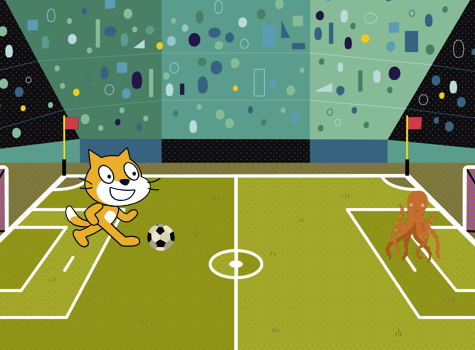
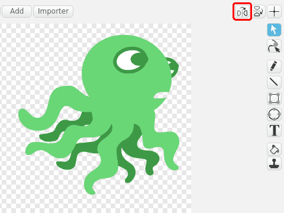
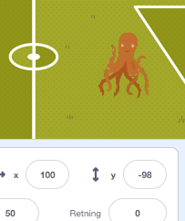

Vi skal lage et enkelt fotballspill, hvor du skal prøve å score på så mange straffespark som mulig.

Steg 1: Katten og fotballbanen
Vi begynner med å lage en katt som kan bevege seg på en fotballbane.
Sjekkliste
Start et nytt prosjekt, for eksempel ved å klikke Programmering i menyen. Hvis du allerede har startet et prosjekt kan du begynne på et nytt ved å velge Fil og deretter Ny.
Klikk på i i hjørnet av kattefiguren, og gi katten navnet Leo.
Klikk på nederst til venstre på skjermen for å hente inn en ny bakgrunn. Velg bakgrunnen Utendørs/goal1 eller Utendørs/goal2.
Vi skal nå skrive et lite program som flytter katten Leo når vi klikker på ham. Merk Leo i figurvinduet. Pusle deretter sammen de følgende klossene i skriptvinduet til høyre:
når denne figuren klikkes
gå (10) steg
Test prosjektet
Klikk på det grønne flagget.
Flytter Leo på seg når du klikker på ham?
Hva skjer om du klikker mange ganger på Leo slik at han når bort til kanten av scenen?
Sjekkliste
Du kan flytte Leo tilbake på skjermen ved å trykke på ham og dra ham dit du vil.
Vi vil likevel programmere en enklere måte å få Leo tilbake på banen på. Lag et nytt skript, ved siden av det du allerede har laget, som ser slik ut:
når grønt flagg klikkes
gå til x: (-180) y: (-30)
Nå vil Leo komme tilbake på banen hver gang du klikker det grønne flagget rett over scenen.
Lagre prosjektet
Du har nå skrevet et lite program! Scratch lagrer alt du gjør med jevne mellomrom. Det er likevel en god vane å lagre selv også innimellom.
Over scenen er det et tekstfelt hvor du kan gi et navn til spillet ditt. Kall det for eksempel Straffespark.
I menyen Fil kan du velge Lagre nå for å lagre prosjektet.
Steg 2: Vi sparker ballen
Det neste vi trenger i spillet vårt er en ball!
Sjekkliste
Vi skal nå legge til en ball-figur i spillet vårt. Klikk på og velg fotballen Ting/Soccer Ball.
Gi fotballen navnet Ball.
Lag ballen mindre ved først å trykke på øverst mot midten av vinduet. Deretter kan du trykke på ballen seks ganger.
Vi skal nå skrive et litt lengre program. I dette programmet legger vi først fotballen på plass foran katten. Etter at ballen berører Leo (det vil si Leo sparker ballen) begynner ballen å bevege seg. Se om du kjenner igjen hvor i programmet de forskjellige tingene skjer:
når grønt flagg klikkes
gå til x: (-125) y: (-60)
vent til (berører [Leo v]?)
for alltid
gå (6) steg
slutt
Test prosjektet
Klikk på det grønne flagget.
Sparker Leo ballen når du klikker på ham?
Kan Leo sparke ballen en gang til dersom du trykker det grønne flagget igjen?
Steg 3: Vi trenger en keeper!
Vi skal nå gjøre spillet litt vanskeligere ved å programmere en keeper.
Sjekkliste
Legg til en figur til som kan være keeper. Vi har brukt Dyr/Octopus, men du kan også bruke en annen figur om du vil.
Flytt figuren inn i målet. Om det ser ut som figuren står med ryggen til ballen kan du snu den på følgende måte: Klikk på Drakter-fanen, og deretter på snu-knappen som er merket med rødt i figuren under.

Gi figuren navnet Keeper.
Lag det følgende programmet for keeperen:
når grønt flagg klikkes
gå til x: (100) y: (-50)
pek i retning (0 v)
for alltid
gå (15) steg
sprett tilbake ved kanten
slutt
Det er et par nye klosser i dette skriptet. Les programmet nøye. Hva tror du de nye klossene gjør?
Test prosjektet
Klikk på det grønne flagget.
Starter keeperen i målet?
Beveger Keeper seg opp og ned på skjermen?
Sjekkliste
En ting som ser litt rart ut er at Keeper ikke ser på ballen. Vi fikser dette ved å legge til en begrens rotasjon vend sideveis-kloss helt i begynnelsen av skriptet vårt.
Du synes kanskje at keeperen er litt stor? Vi har tidligere sett hvordan vi kan bruke for å gjøre figurer mindre. En annen måte å endre størrelsen på er ved å bruke klosser fra Utseendet-kategorien. Endre skriptet ditt slik at det ser ut som dette:
når grønt flagg klikkes
begrens rotasjon [vend sideveis v]
sett størrelse til (50) %
gå til x: (100) y: (-50)
pek i retning (0 v)
for alltid
gå (15) steg
sprett tilbake ved kanten
slutt
Om du har brukt en annen figur enn blekkspruten som Keeper vil du kanskje bruke et annet tall enn 50 når du setter størrelsen. Prøv deg frem!
Test prosjektet
Klikk på det grønne flagget.
Ser keeperen i retning av Leo og ballen?
Hva skjer etter at katten skyter mot mål? Kan keeperen redde ballen?
Steg 4: Keeperen redder!
Nå er det på tide at keeperen redder ballen!
Vi skal nå lage noen tester som sier i fra når keeperen redder ballen, eller når ballen går i mål.
Sjekkliste
Vi begynner med å finne ut når keeperen redder ballen. Klikk på Ball. Endre deretter skriptet slik:
når grønt flagg klikkes
gå til x: (-125) y: (-60)
vent til (berører [Leo v]?)
for alltid
gå (6) steg
hvis (berører [Keeper v]?)
send melding [Redning v]
ellers
slutt
slutt
I klossen send melding må du velge Ny melding og deretter skrive inn Redning som meldingsnavn.
Meldinger er beskjeder som figurene i spillet kan sende seg i mellom uten at du egentlig ser det. Disse gjør det lett for flere figurer å reagere på ting som skjer.
Vi vil nå at både ballen og keeperen skal slutte å bevege seg ved en redning. Legg til dette som et nytt skript på både Ball og Keeper:
når jeg mottar [Redning v]
stopp [andre skript i figuren v] :: control
Test prosjektet
Klikk på det grønne flagget.
Slutter både ballen og keeperen å bevege seg om keeperen redder?
Sjekkliste
Nå skal vi også sjekke om ballen har gått i mål. Vi gjør dette ved å undersøke hvor langt til høyre på skjermen ballen har beveget seg. Posisjonen til en figur i Scratch er beskrevet ved hjelp av koordinater: x-posisjon sier hvor en figur er sidelengs på skjermen, mens y-posisjon sier hvor langt opp eller ned på skjermen en figur er. Rett under scenen kan du se to tall merket x og y. Disse viser koordinatene til musepekeren.

Vi sier at det har blitt mål om ballen går langt nok til høyre uten at den blir reddet. Om du prøver å peke på målstangen med musepekeren ser du at den står omtrent ved x lik 160. Utvid skriptet på ballen videre slik at det blir seende slik ut:
når grønt flagg klikkes
gå til x: (-125) y: (-60)
vent til (berører [Leo v]?)
for alltid
gå (6) steg
hvis (berører [Keeper v]?)
send melding [Redning v]
ellers
hvis ((x-posisjon) > [160])
send melding [Mål v]
slutt
slutt
slutt
På samme måte som for redning kan vi avslutte bevegelsen til Ball og Keeper ved å lage dette skriptet på begge figurene:
når jeg mottar [Mål v]
stopp [andre skript i figuren v] :: control
Vi kan også la Leo juble litt når han scorer mål. Klikk på kattefiguren og gi ham følgende skript:
når jeg mottar [Mål v]
si [Ja, det ble mål!!] i (2) sekunder
Lag et tilsvarende skript der Leo depper litt, om det blir en Redning. Prøv dette på egen hånd!
Test prosjektet
Klikk på det grønne flagget.
Klarer du å score mål?
Klarer keeperen å redde noen skudd?
Endre farten
Du kan gjøre spillet enklere eller vanskeligere ved å endre farten på ballen og hvor fort keeperen beveger seg. Begge disse er bestemt av tallet som står i gå _ steg-klossene til henholdsvis Ball og Keeper.
Prøv forskjellige tall for både fotballen og keeperen til du finner den kombinasjonen du liker best. Pass på at det blir litt vanskelig, men ikke umulig.
Steg 5: Førstemann til 10!
Vi skal tilslutt se på hvordan vi kan telle hvor mange mål som scores.
Sjekkliste
For å telle hvor mange mål du har scoret, og hvor mange redninger Keeper har gjort, skal vi bruke variabler.
Klikk på scenen til venstre for figurlisten.
Klikk på Data-kategorien og lag en ny variabel. Gi den nye variabelen navnet Mål. Legg merke til at det dukket opp en ny boks på scenen som er merket Mål, og som viser tallet 0.
Vi vil nå telle målene. Lag et nytt skript som endrer Mål hver gang meldingen Mål sendes. Lag dette skriptet på Scenen:
når jeg mottar [Mål v]
endre [Mål v] med (1)
Vi kan gjøre tilsvarende for å telle antall redninger. Lag en ny variabel som heter Redninger.
Lag deretter et nytt skript for å telle redningene:
når jeg mottar [Redning v]
endre [Redninger v] med (1)
Test prosjektet
Klikk på det grønne flagget.
Teller spillet hver gang du scorer mål?
Telles også hvor mange redninger keeperen gjør?
Sjekkliste
Avslutningsvis vil vi legge inn en test på om Leo klarer å score 10 mål eller Keeper klarer å redde 10 ganger. Dette er litt omfattende.
Først vil vi lage to nye bakgrunner, en vi kan bruke om spilleren vinner (katten scorer 10 ganger) og en vi bruker om spilleren taper (keeperen redder 10 ganger). Klikk på Bakgrunner-fanen. Høyreklikk på den lille versjonen av bakgrunnen din midt på skjermen og velg Lag en kopi.
Velg en passende farge, og klikk deretter på tekstverktøyet. Velg Skrifttype: Marker nederst på skjermen. Skriv en tekst som ligner på Gratulerer, du vant! litt høyt på kopien av bakgrunnen. Gi denne bakgrunnen navnet Seier.
Lag deretter en ny kopi av den originale bakgrunnen. Kall denne bakgrunnen Tap og skriv også her en passende tekst.
Lag et skript på bakgrunnen som setter variabelene dine til 0 ved begynnelsen av spillet.
når grønt flagg klikkes
sett [Mål v] til [0]
sett [Redninger v] til [0]
bytt bakgrunn til [goal1]
send melding [Nytt spark v]
Vi vil nå spille uten at vi må klikke på det grønne flagget for hver gang vi skal skyte et straffespark. Til dette bruker vi meldingen Nytt spark. Vi må nå bytte ut
når grønt flagg klikkes
med
når jeg mottar [Nytt spark v]
på både Leo, Ball og Keeper. For eksempel, på Leo blir skriptet seende slik ut:
når jeg mottar [Nytt spark v]
gå til x: (-180) y: (-30)
Til slutt legger vi på testen om vi har scoret 10 mål, eller om keeperen har reddet 10 ganger. Endre Mål-skriptet på scenen slik at det blir seende slik ut:
når jeg mottar [Mål v]
endre [Mål v] med (1)
vent (2) sekunder
hvis ((Mål) < [10])
send melding [Nytt spark v]
ellers
bytt bakgrunn til [Seier v]
stopp [alle v] :: control
slutt
På samme måte endrer du Redning-skriptet på scenen:
når jeg mottar [Redning v]
endre [Redninger v] med (1)
vent (2) sekunder
hvis ((Redninger) < [10])
send melding [Nytt spark v]
ellers
bytt bakgrunn til [Tap v]
stopp [alle v] :: control
slutt
Test prosjektet
Klikk på det grønne flagget.
Får du skyte flere straffespark uten å måtte trykke på det grønne flagget mellom hver gang?
Bytter spillet til riktig bakgrunn om du scorer 10 mål?
Bytter spillet til riktig bakgrunn om keeperen redder 10 ganger?
Nullstilles målene og redningene når du klikker det grønne flagget?
Lydeffekter
Du kan legge lydeffekter på spillet ditt ved å bruke klossene under Lyd-kategorien. Prøv for eksempel å legge på lyder når ballen sparkes, når keeperen redder eller når det blir mål.
For å finne flere lyder å bruke i spillet ditt kan du velge Lyder-fanen. Her kan du hente flere lyder fra Scratch-biblioteket eller til og med ta opp egne lyder. Eksperimenter og prøv deg frem!
Lagre spillet
Da er vi ferdige med Straffespark! Om du har noen ideer til hvordan du kan gjøre spillet enda morsommere så prøv dem selv!
Om du klikker Legg ut vil prosjektet ditt bli lagt ut på Scratch-hjemmesiden slik at andre kan spille det!
 nederst til venstre på skjermen for å hente inn en ny bakgrunn. Velg bakgrunnen
nederst til venstre på skjermen for å hente inn en ny bakgrunn. Velg bakgrunnen  og velg fotballen
og velg fotballen  øverst mot midten av vinduet. Deretter kan du trykke på ballen seks ganger.
øverst mot midten av vinduet. Deretter kan du trykke på ballen seks ganger.